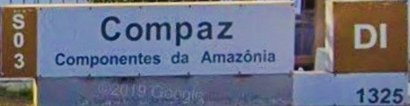

- Graduação em Análise e Desenvolvimento de Sistemas pela UNIFEOB - início 8/2021
- Especialização em Ergonomia: Produto e Processo na Bio Cursos - em 2020
- Especialização em Engenharia de Segurança do Trabalho em 2014 pela UNINORTE
- Graduado em Engenharia de Produção Mecânica em 2013 pela UNIP
Amazon Aço Indústria e Comércio Ltda, de Abr/2015 a Out/2019, sendo:
- Ago/2017 a Out/2019 como Engenheiro de Segurança do Trabalho; e
- Abr/2015 a Ago/2017 como Planejador de Manutenção.
Moto Honda da Amazônia, de Mai/2012 a Nov/2013 como Estagiário de Engenharia.
Moto Honda da Amazônia, de Set/2006 a Dez/2011, sendo:
- Out/2007 a Dez/2011 como Oficial de Produção; e
- Set/2006 a Set/2007 como Auxiliar de Produção.
Compaz Componentes da Amazônia S/A, de 17/01/2005 a 14/08/2006, sendo:
- 01/09/2005 a 14/08/2006 como Alimentador de Materiais; e
- 17/01/2005 a 31/08/2005 como Auxiliar de Manufatura.
Ponte Irmão & Cia Ltda, de 01/03/2002 a 14/01/2003, sendo:
- 01/08/2002 a 14/01/2003 como Gerente de loja; e
- 01/06/2002 a 31/07/2002 como Encarregado de Escritório.
Ponte Irmão & Cia Ltda, de 24/06/1998 a 04/03/2002, sendo:
- 01/09/1999 a 04/03/2002 como Encarregado de Escritório; e
- 24/06/1998 a 31/08/1999 como Auxiliar de Serviços Gerais.
Comando do Exército, de 01/03/1993 a 31/10/1994 como soldado
D. Ribeiro de Souza & Cia Ltda, de 02/05/1990 a 28/02/1992 como Ajudante de Serviços Gerais